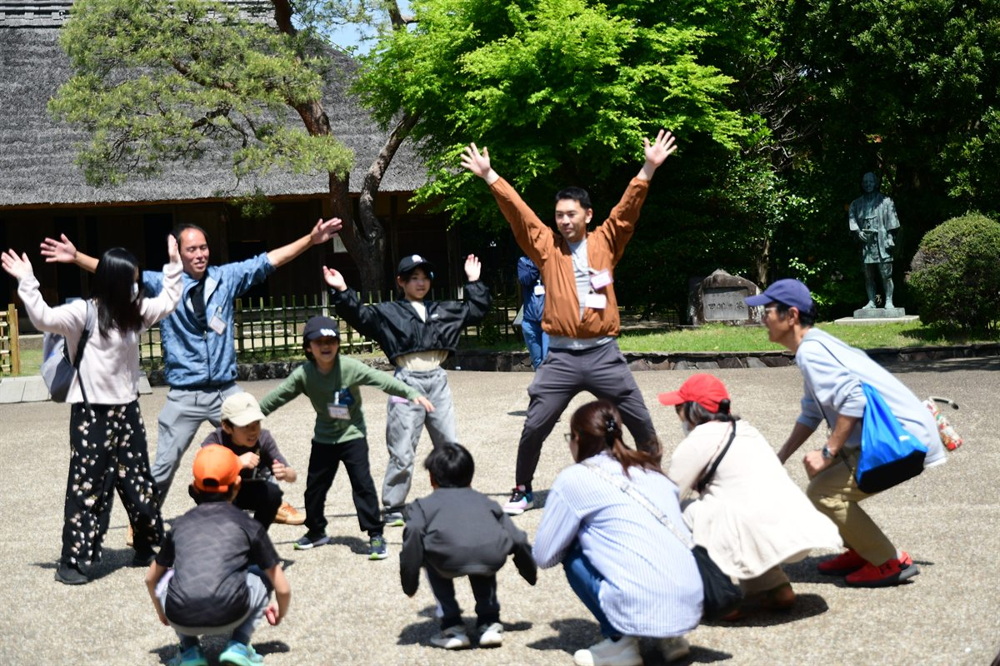
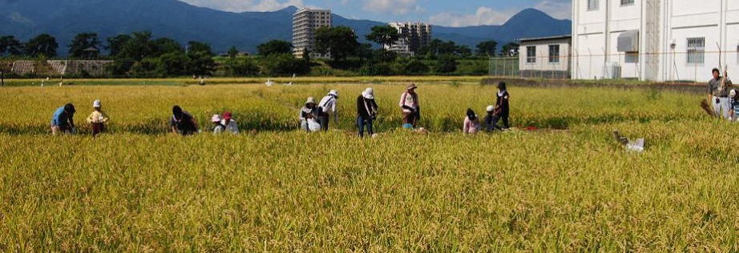
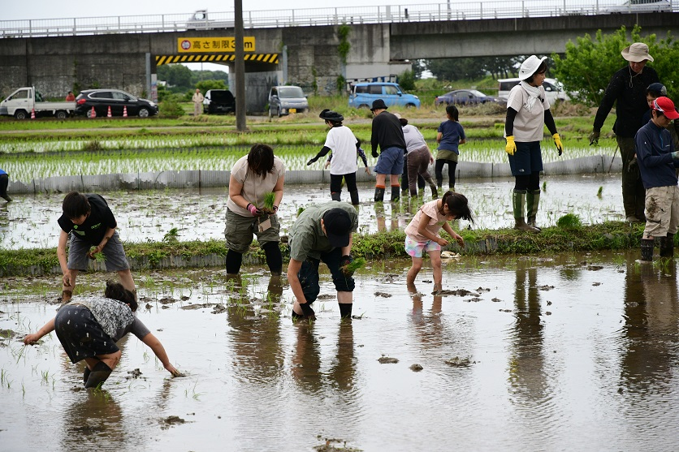
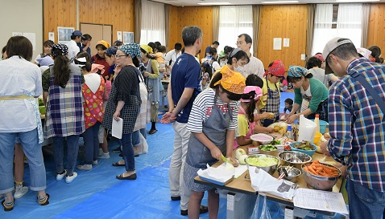
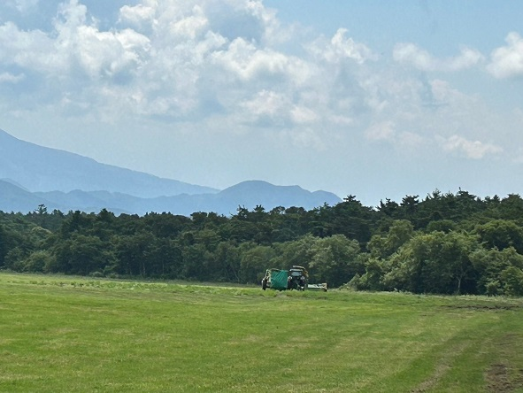
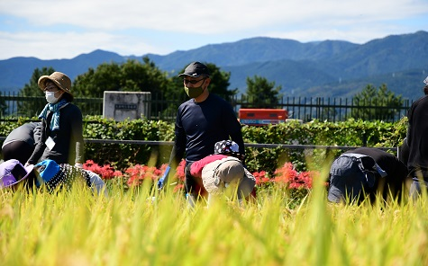
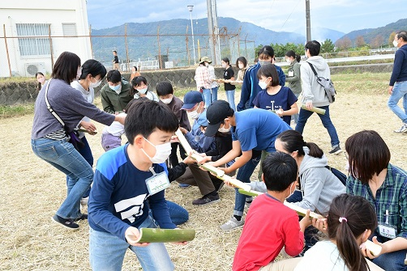
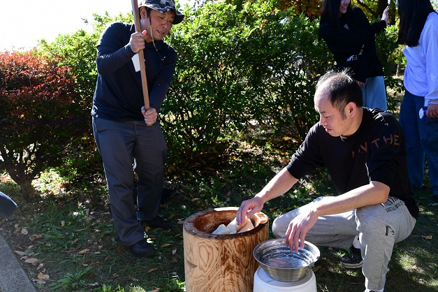

4月
入楽式
顔合わせとゲーム、金次郎の史跡ウォーキング。
尊徳記念館／大井町の楽校ほ場

小田原・大井町で田植え・稲刈り体験ができる親子の自然学校です。
4月から12月まで月1回様々な体験活動ができます。
SCHEDULE
春に苗を植え、夏に野へ出て、秋に刈り取る。季節が一巡りします。

4月
顔合わせとゲーム、金次郎の史跡ウォーキング。
尊徳記念館／大井町の楽校ほ場

5月
7枚の田んぼを、2日間かけて手で植えます。泥んこ遊びつき。泥だらけになります。
大井町 楽校の田んぼ

6月
大磯海岸で網を引きます。年により、酒匂川の水質調査と自然観察も行います。
大磯海岸 台舟ほか

7月
チームに分かれてカレーを作ります。報徳の教えを体験的に学びます。
曽我みのり館分館

8月
森遊び、川遊び、バスツアー。夏休みらしい活動を毎年考えます。
年により変更

9月
春に植えた稲を、2日間かけて刈り取ります。
大井町 楽校の田んぼ

10月
尊徳祭で、自分たちが育てた米と野菜を売ります。売り子も子どもです。
小田原市尊徳記念館

11月
刈り取った田んぼを広々と使って、バーベキューや工作。毎年内容を考えます。
楽校の田んぼ

12月
みかんを収穫し、杵と臼でもちをつきます。修了証書を受け取って一年が終わります。
曽我みのり館分館
このほかに、サツマイモの苗植えや芋ほりなどの特別活動があります。
NEXT
楽校の田んぼで、2日間かけて稲刈りをします。9:00〜15:00の予定です。
第16期生の皆さまには、詳細をメールでご連絡します。
報徳楽校の畑で、サツマイモを掘り出します。午前中のみ。掘った芋は10月のこども報徳市で販売します。
第16期生の皆さまには、詳細をメールでご連絡します。
小田原市尊徳記念館の尊徳祭で、育てた米と野菜を販売します。9:00〜14:00の予定です。
第16期生の皆さまには、詳細をメールでご連絡します。
刈り取った田んぼを広々と使います。9:00〜15:00の予定です。
第16期生の皆さまには、詳細をメールでご連絡します。
梅の里センターで、一年をしめくくります。みかん狩りともちつき、修了証書の授与を行います。
第16期生の皆さまには、詳細をメールでご連絡します。